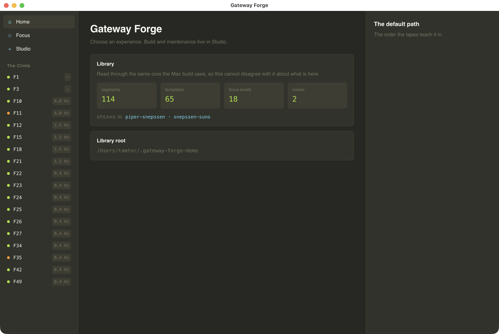

3,812
checks currently passing
A guided-meditation assembly system and journal built around the Monroe Institute's Gateway framework — the Institute's own map kept beside what was actually found, never merged into one answer.
Why it exists
The Monroe Institute published what its Gateway tapes are supposed to do. Practicing them for years produces a second account — the listener's own — and the two do not always agree. Focus 26 is the clearest case: the Institute places it among the Belief System Territories; what's actually there is a featureless dark. Most tools would pick a winner. This one shows both, permanently, and lets the disagreement stand.
That single decision — published is not found, and neither overwrites the other — runs through the whole app: three-valued coverage (a level is described by a tape, by a second-hand summary, or by nothing at all, and those are different kinds of evidence), a local model that drafts session content but only from what's actually written down, and a binaural bed generated fresh at playback from measurements of the real tapes rather than looped recordings of them.
Measured
The bundled voice is a Piper/VITS model fine-tuned on real speech, and its training clips were trimmed tight — so the model learned to stop mid-breath. A short line like "Build the pattern." ended at rms 0.0061 with the mic still open, against roughly 0.0007 for a clean stop. The fix isn't a fade — fading a real recording eats the same consonant it's meant to protect — it's giving the model two extra frames of silence to decay into before the cut.
| padding | mean tail rms | worst case | runs above threshold |
|---|---|---|---|
| none | 0.00180 | 0.00605 | 14% |
| +1 frame | 0.00075 | 0.00246 | 0% |
| +2 frames | 0.00039 | 0.00079 | 0% |
| +3 frames | 0.00112 | 0.00336 | 0% |
Three frames is worse than two — past a point the model has room to voice into the extra silence rather than settle into it. It's a measured optimum, not a rounder-sounding guess, over seven real lines and five draws each.
The app
Shots below are a genuinely fresh install — this public checkout's own bundled library, zero visits, zero journal entries. Not staged: the Institute's transcripts aren't the author's to redistribute, so a public build never has more to show than this.

Home, and the shell everything else sits in: the climb rail on the left, the workspace in the middle, an inspector on the right. The rail lists every Focus level whether or not anything has been written for it yet — an empty one is a place awaiting content, never an error state.

A level. The measured signal it actually plays, the Institute's published description kept as theirs, and the space for what you found instead — with that level's journal in the right pane rather than behind a separate mode.

Studio, where building and maintenance live so Home never has to carry them.

Windows and Linux, same core, one deliberate difference: the library root is printed on the Home screen instead of tucked away. macOS is the version built for people who never want to go looking inside an app; the cross-platform build assumes the opposite and shows its own file path up front, next to an in-app footprint panel for managing or clearing it.
■ the trunk — the F27 tape's own seven climbs, F1 through F27 — with spurs branching where the tapes detour: F11 off F10, F18 off F15, F22 off F21, F24 off F23, then F27 continuing to F34, F35, F42, F49.
Measured, from the source material
FFT analysis across all fifty original tapes, keeping only genuine offset pairs (a real binaural signal, not two centred peaks) and weighting by how long each one holds. The whole programme collapses to three signals:
| signal | beat | carrier | where |
|---|---|---|---|
| A | 4.0 Hz | ~99–100 Hz | Wave I · Focus 10 |
| B | 1.50 Hz | ~99.2 Hz | Waves II–VI · Focus 12, and parts of 15 & 21 |
| C | 0.37 Hz | ~48.8 Hz | Waves VI–VIII · Focus 21 upward, all of Focus 27 |
The app never plays a looped recording of these — it regenerates the pair live from the measurement, so the differential can move continuously through a session's transitions instead of cutting at a seam. Transitions sweep rather than glide: the differential widens before it narrows, matching how a transition was actually described rather than a straight linear fade.
Three decisions worth naming
The Institute's own description and the listener's own account are stored separately and shown together. A level page can disagree with itself on purpose — that's the data, not a bug to reconcile.
Session drafting runs on a local Ollama model against the app's own documented material — it proposes an include/omit decision per real segment, never new narration, and nothing reaches the library unreviewed.
Guidance invites noticing rather than asserting what you'll feel. A placeholder briefing for an unmapped level says so and names the level as unmapped, rather than inventing scenery to fill the gap.
Downloads
Ad-hoc signed builds, straight from this repository's own release tag — the same ./build.sh and CI packaging anyone can run themselves, just already run.
Gatekeeper will refuse an unsigned download by default — right-click the .app and choose Open once, or clear the quarantine flag from Terminal, either of which says you mean to run it.
Unsigned, so SmartScreen will warn that the publisher is unknown — a code-signing certificate costs money this project does not spend. Choose More info, then Run anyway, if you trust where you got it.
The AppImage needs no install — chmod +x it and run. The tarball is the same build, if you would rather place it yourself.
xattr -cr "Gateway Forge.app" is the Terminal route on macOS, run once after unzipping. Every archive's SHA-256 is published as SHA256SUMS on the release page — check it against what you downloaded before you clear any quarantine flag, since that is the point at which verifying still means something.One line, if you would rather not click through the warnings by hand. Each reads the asset names from the release rather than guessing them, verifies the SHA-256 against SHA256SUMS and stops on a mismatch, and clears the quarantine flag (macOS) or the downloaded-file block (Windows) — saying so as it goes. Neither asks for elevated permissions, and neither writes outside the paths it prints.
curl -fsSL https://raw.githubusercontent.com/snepssen/gateway-forge/main/install.sh | shirm https://raw.githubusercontent.com/snepssen/gateway-forge/main/install.ps1 | iex| sh (or the | iex) and it prints instead of running.git clone https://github.com/snepssen/gateway-forge.git
cd gateway-forge && ./build.shswift build, then it assembles and ad-hoc signs the .app. No installer, no elevated permissions, nothing leaves the machine.The companion is suspended. Nothing listens on the network and no
device can pair — one flag in CompanionService says so, and a
check holds every path to it, because a feature that is off in some places
and on in others is worse than either. It is set aside rather than removed:
GatewayCompanion.xcodeproj, the LAN transport and their suites
are all still in the repository, and the phone side will be picked up again.
To take a session to a phone meanwhile, open it and choose Export as
WAV. An assembled session.wav is the narration alone — the
bed is generated live underneath it while you listen — so the export is a
mixdown rather than a copy: the same bed engine, over the plan the session
was assembled with, at your own listening levels, written as one stereo
file.
| component | platform | status |
|---|---|---|
| Desktop app | macOS 14+, Apple Silicon | Installed daily driver |
| iOS companion | iOS 17+ | Suspended — the code is still here |
| Windows / Linux | TypeScript core + Electron shell | Released, checked, unsigned |
cross-platform/ is 59 core modules, 31 check suites and a packaging gate, and a shell
drawn on top of them: the climb rail, a level page, a listening calibration,
the bed sounding live through the same BedEngine the Mac plays,
and the same fine-tuned voice speaking through the same Piper model. Both are
imported rather than copied, so the parity suites that hold them to
the Swift original are checking the code that actually runs — on real Ubuntu
and Windows runners, every push, speech engine and model included.
notes.md, a journal, saved
calibration, or the author's private voice is refused outright, and that
check is verified by planting those files into a real build and watching it
fail.
npm install. The published package carries espeak-ng 1.52.0;
this voice was trained with the espeak-ng its trainer pins, 229 commits
later, which inserts a linking palatal glide before a following vowel —
bˈɑːdiʲ ɐslˈiːp. 147 of the voice's 538 training
clips contain it. Measured over 817 calls it was the only difference
between the two, so the gap was one espeak version and the answer was to be
that version. All 817 now match the macOS engine byte for byte.
mksquashfs
and wine64 for macOS hosts — so each platform builds on its own
runner and the results are attached to a release.How it's built
Native Swift and SwiftUI throughout, no web engine and no bundled interpreter — the build fails outright on any Python file anywhere in the tree, on purpose. Speech runs through the same Piper/VITS-over-ONNX engine Voice Forge was built to expose, here bundled as a single fixed voice fine-tuned on the author's own speech.
A checkout of this public copy has its corpus-dependent suites — the ones that read the original tape transcripts or the Institute's manuals — stand down by name instead of either failing on files that were never meant to ship here, or quietly reporting health they never actually looked for. note [source tapes] no tape transcripts in this tree — corpus suites stand down (this is the expected state of a build made for distribution) is what that looks like in practice.
The three retained resonant-tuning cues and the wake-up signal that used to come from sampled Monroe tape recordings are now synthesised: the bed generates its own tuning and its own return signal, live, at the measured frequencies above. Nothing sampled from the original tapes ships in this build.
Changelog
Windows and Linux assemble and play a session now. Previously the cross-platform build could read the library and sound the bed but not make a tape. The assembler and the session transport are both ported: it renders what is missing, lays the takes down with the silences the script asks for, records where each piece actually landed, and plays the result with the bed generated live on top — one audio clock, the pan envelope, the arrival hold and the return. Both builds now produce the same tape from the same takes byte for byte, checked against a fixture neither side can fake.
The panning that shipped in v5.2.0 was wrong. @pan applied to the whole session rather than the segment that declared it, so Headphone Orientation left every word after it in one ear — the opposite of the check it was added for. It is scoped to its own segment now, and exports carry it, which they did not before.
The resonant tuning never sounded. Nothing placed it: the step that would have put the hum on the tape did not exist, and a check actively forbade writing one. Both are fixed, and the hum is where the script says it is.
The Projected Energy Bubble ran backwards. Its creation described a current falling down the inside of the body and rising outside, while every line after it — the strands, the recreation, the dissolve — described the opposite. It is one circuit again: out of the crown, down around the body, in at the soles, up through you.
The ten-point relaxation counts to ten in both densities. At full detail it opened at four, leaving the first three points unspoken, while the bare count spoke all ten. Someone who has stepped down to anchors alone was being taught a different shape of the same induction.
library/sources/ is not distributed, and it was not — but the compose layer's test data quoted those files wholesale, and library/ ships inside the app. About forty thousand characters, in every release from the first. It is out of the package and out of this repository's history, and a check now refuses any fixture whose text is not something this repository already ships. Builds before v5.3.0 contain it; that is why the earlier downloads have been withdrawn rather than left up.Export a session as a single stereo file. An assembled session.wav is the narration alone — the bed is generated live underneath it while you listen — so copying that file to a phone would hand over a voice talking into silence. Export mixes it down instead: the same bed engine, over the plan the session was assembled with, at your own listening levels. Open a session and choose Export as WAV, or run gfrender --export-session.
The voice is panned, at last. @pan has been in the script language, and in every session the generator writes, while nothing between the parser and the speakers read it. Headphone Orientation has been asking listeners to confirm they hear the voice in their right ear — an instruction that was unfollowable, and that told anyone wearing their headphones correctly to turn them around. It reaches the audio now, and a check refuses any session that uses that segment without panning. Sessions already on disk are untouched and still play centred; only what is assembled from here on picks it up.
The iOS companion is suspended. Set aside rather than removed — the client, the LAN transport and their checks all remain, and the phone side will be picked up again. Nothing listens on the network and no device can pair meanwhile. Export as WAV covers the reason it existed.
pan set before the audio graph is running is silently ignored. The bed's master fade-in had been twelve times too slow in the Windows and Linux build since the day it was ported, invisible to a parity suite that compared only samples past the ramp. And the app's own voice lookup broke on a SwiftPM bundle-layout change: it built, passed its packaging gate, and launched offering to rebuild itself with the model sitting two directories away.The first release with Windows and Linux builds in it. Both are packaged by CI from the tag, checked before they are built, and published with their checksums — previously only a macOS build existed.
Resonant Tuning is now an original humming exercise. The old segment followed the Institute's own breathing instructions closely; it has been replaced with three level-scoped variants written from first principles — vagal tone, bone conduction, and the fact that humming quieter drives proportionally more vibration into the skull than into the air. Low and in the chest through Focus 10–15; rising through the throat and jaw at 18; deliberately quiet from 21 upward, where it is felt more than heard. Nothing in it is paraphrased from the Institute's material.
The Resonant Energy Balloon becomes the Projected Energy Bubble. The three-strand construction was already the author's own; what is new is the load-bearing logic said out loud — strands at different depths pulling against each other like woven fibre, triangulating into a shell — and a crown-to-feet circuit tied back to the breath rhythm the ocean segment already establishes.
Verbosity now follows practice, per level. Full detail by default; ten completed sessions at a level steps it down to guided, twenty to anchors alone. A month away from a level resets it — earned ease is for someone actively practising there, not a permanent credential. Any level can be held at a chosen verbosity from its own page, and a choice made that way does not decay.
An app icon, and one-line installers for macOS, Linux and Windows that verify checksums before they unpack anything.
npm run check:ci now passes end to end on a fresh checkout as well as in the working tree.First public release. macOS only — the native SwiftUI app, the authored library, the live-generated bed, and the ledger that keeps a listener's own practice on their own machine.
The wider workshop
Move between guided-meditation authoring, measured speech, lyric video, delivery validation, keeping a Downloads folder empty, and the small field tools that support all of them.
Assemble guided sessions and keep published maps beside what was actually found.
Explore Gateway Forge →A transparent Piper workbench for timing, pronunciation, and honest audio export.
Explore Voice Forge →Karaoke and narration video with a vector visor face that mouths every word.
Explore Protoke →Check a finished file against where it is going, and correct it without touching the original.
Explore Media Preflight →Fetch from a link or convert what you already have, without re-encoding what it does not have to.
Explore siphon →Empty the Downloads funnel into structure the folder taught it, and undo any of it.
Explore auto-sort →Small utilities for audio inspection, corpus work, authoring, and repeatable checks.
Open the toolbox →Get in touch
No analytics, no crash reporter, no way for a failure to reach me on its own. If you build it and something breaks, the version and platform are worth including.